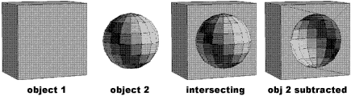
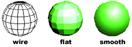

CAD-3D & CAD-3D 2.0 (Cyber Studio)
CAD-3D was a basic polygonal 3D modeling and rendering program created by Tom Hudson. Using the various view ports, the operator could assemble scenes out of geometric primitives or custom extruded or lathed objects, adjust lighting and camera positioning, and render images as stills or, beginning with CAD-3D 2.0, as an animated sequence. Published a year after the first version, and bundled together with Cybermate as the product Cyber Studio, CAD-3D 2.0 was probably the first low-cost 3D animation system and was certainly the first with such an extensive feature set. The open architecture design of CAD-3D 2.0 also established it as a central platform whose functionality was subsequently extended with the Cyber Control, Anti-alias, Cyber Sculpt and Cyber Texture products.

Tom Hudson made a name for himself early on in the Atari community writing articles and type-in programs for ANALOG Computing magazine, and then by creating the digital paint programs DEGAS and DEGAS Elite (published by Batteries Included) for the Atari ST. Back in 1984, Tom had created a type-in Atari 800 BASIC program published in ANALOG called Solid States, with which a user could manually enter a series of three-dimensional coordinates, specify connecting lines, and then render perspective views of the data as a wire frame. Tom’s interest in 3D graphics originated from wanting to make display graphics for science fiction film sets. Solid States didn't meet his expectations, but it was a start.

Solid States on the Atari 800
A Solid States rendering
In late 1985, Tom ported this simple program to the ST, inheriting some of the graphical user interface features that came “for free” with TOS.

{kind=link}
{kind=link}
{kind=link}
{kind=link}
However, this “3D viewer” remained primitive and numerical in nature. After Gary and Tom looked at Enabling Technologies’ Easy 3D at the Winter 1985 COMDEX, Tom took the interface in a new direction, eventually resulting in CAD-3D 1.0.

Easy3D on the Macintosh
I went back to Kansas City and turned out CAD-3D 1.0 after a few months of work. The worst part of developing the program was the fact that I didn't have a hard drive at that point—just two floppy drives! Compiling the program was a nightmare of disk-swapping and trying to remember what files had been compiled and which hadn't. I didn't have a “make” utility at this point, which made life incredibly difficult.
{kind=link}
CAD-3D 1.0 split the screen into four windows. One window was a perspective-enabled view through a center-pointing camera outside the scene. The perspective viewpoint could be moved about the middle of the scene much like one turns a bi-axial tabletop globe. The other three windows represented the top, front and side elevations of the scene, without perspective. Moving and manipulating 3D objects in any of the three orthogonal windows was automatically reflected in the rest of the windows. Tools were accessed through drop-down menus.
{kind=link}
The user could add 3D objects to the scene either by loading them from disk or by creating them from a small library of primitives (sphere, torus, wedge, rectangular solid, etc.). There were also two tools, spin and extrude, which created objects from a two-dimensional template shape drawn by the user. The final modeling tool was the Boolean “joiner”, which allowed the user to overlap two objects and subtract one from the other, sort of like sculptural carving.
The biggest coding challenge in the project was writing the 3D Boolean algorithm. This is one of the most complex tasks in 3D work and the Atari’s floating-point routines really weren't up to the task. It took weeks of work to get the Boolean code stable enough to work in most cases, and I swore I’d never write another 3D Boolean algorithm!
Because of the Atari ST’s tiny color palette, rendering options in CAD-3D were quite limited. In color mode, the user could choose to use the palette to provide 14 shades of one color (blue, red, yellow, green, violet or cyan) or seven shades of any two colors. When used in monochrome mode, CAD-3D could generate sixteen shades of gray by using fill patterns.
The CAD-3D renderer also had four modes: wire frame, hidden, solid and outline which could be used for different effects, although solid was by far the primary mode.
CAD-3D Version 2.0 added significantly expanded functionality over Version 1.0 in many ways, and involved lots of changes under the hood. For one thing, Tom and Gary put a major effort into wringing more performance out of the 68000 microprocessor. 3D computer graphics are challenging for computers due to the sheer quantity of calculations required to accomplish anything, and the more complex the geometry in a 3D scene, the longer it takes to do all those calculations.
Starglider
By this point, everybody in the business had noticed a new computer game called Starglider (for the Atari ST and Amiga) created by the British game designer and programmer Jez San. Starglider featured highly responsive 3D graphics for the time, so Tom and Gary contacted Jez and purchased some useful routines from him that helped speed the redrawing of CAD-3D’s viewports. The most dramatic way this new technology manifested itself in CAD-3D 2.0 was that the user could now use the mouse to rotate the perspective camera’s view “in real time” while in wire frame mode. Jez went on to play a significant role in the development of the Super Nintendo and Microsoft X-Box game consoles.
Meanwhile, Tom reworked the guts of the software to provide an “open architecture” interface so he could later extend the application with plug-ins like Cyber Control. He also added a simple Z-buffer scan-line renderer for cleaner shaded renderings, more flexible color palette management, a more flexible light interface, and measuring/dimensioning tools.
The interface changed as well. The left third of CAD-3D was given over to an icon panel to provide buttons for commonly-used tools. Gary explains:
The reason we added the command panel was that we had introduced a lot of controls we wanted direct access to without hunting through dropdowns. [The screen space tradeoff] was kind of a catch-22 situation. In some ways we were just riffing off the icon panel design of programs like Mac Paint and I guess to some extent even [Atari’s paint program] Neochrome.
A huge feature of the new CAD-3D was support for LC Technology’s StereoTek 3D Glasses, which were liquid crystal shutter glasses controlled by a tethered cartridge unit. Using control software (developed by Mark Kimball), CAD-3D could switch between two offset views of the same 3D scene—the glasses would alternatively obscure the wearer’s eyes in perfect synchronization with such speed that a persistent 3D experience resulted.
Yet the biggest new feature by far in CAD-3D 2.0 was the ability to render to the new “delta-compressed” animation format developed by Mark Kimball. The basic idea was to start with a picture, and then for each subsequent “movie frame” store only the parts that change, rather than storing each frame as an entire picture, thus wasting data. Mark Kimball implemented this process as an Atari ST desk accessory called Cyber Smash. Tom explains:
This was an amazing piece of code that found the rendering buffer inside CAD-3D and, as you generated images, it would create an animation file frame-by-frame. The procedure is pretty simple -- the first frame’s screen image would be stored as is. When the second frame was generated, Cyber Smash would perform a logical XOR operation, which has the effect of reducing the image to only what has changed between the prior frame and the current one. These changes were compressed and saved to the file, then the animator would generate the next frame and call Cyber Smash to compress it. This was done for each frame in the animation. The end result was a fairly compact animation file that would play back quickly because each sequential frame after the first was merely an XOR operation on the video memory. Of course, the roundabout procedure for generating these animation files was a pain, but we'd take care of that when we integrated his code with ours.
Over the next couple of years, Tom developed several companion products for CAD-3D, including the 3D Developer Disk for Cyber Studio, 3D Plotter & Printer Drivers, Antialias, 3D Fonts I, Cyber Control, Cyber VCR, and Cyber Sculpt. Eventually, Tom Hudson went on to help create Autodesk 3D Studio on the PC, which itself passed through four versions, practically spawned an industry, and then was re-designed as the current Discreet product 3ds max. CAD-3D is literally 3ds max’s grandfather. Also, see What Might Have Been.
Spin
Spin, more commonly known in computer graphics as “surface of revolution”, was a lathe-like tool where the user draws a symmetric cross section which the computer uses as a profile for a cylindrical form.

Extrude
As it sounds, extrude was a tool that took a user-drawn cross-section and built geometry that gave the shape depth.

Boolean modeling
Boolean join algorithms take two or more solids that intersect each other in space and either merge their surfaces, subtract one volume from the other, or discard all but the shared volume. In this example, a hemispherical indentation is made in a block by subtracting a sphere from it.
Z-buffer
A z-buffer is an array of data that numerically represents the distance between the focal plane of a 3D camera and a surface for each pixel of a 3D rendering. Z-buffers are used for various purposes in computer graphics, one of which is to help a scan-line renderer sort out which of multiple, overlapping surfaces to draw for a given pixel.
Scan-line renderer
One of two dominant approaches to rendering an image of a 3D scene, the other being raytracing. Although the two techniques are not entirely mutually exclusive of each other, scan-line rendering progressively draws a scene line by line whereas raytracing generally draws a scene object-by-object.
Rendering
In computer graphics, rendering is the process of algorithmically deriving a picture or piece of a picture from other information, which may be a view of 3D geometry, 2D geometry (line art) or other picture information.
Application Programming Interface (API)
A feature of a program that enables another program to communicate with and control it.
Assembly language
The most rigorous and fundamental language available to a programmer for developing software; typically only used to develop extremely optimized mathematical algorithms. Assembly language programming generally requires special expertise.
BASIC
A computer language designed by Dartmouth computer scientists in the 1960s to be easy to learn and use (intended for students as an introduction to computer programming); virtually every general computer system since has had at least one variant of BASIC implemented for it. The language has evolved into various forms over the decades, perhaps most notably those produced by Microsoft starting in the late 1970s.
Desk Accessory
Different operating systems have used different approaches to managing types of programs that hang around (“stay resident”) while the user is working with an application. Often these co-existing programs are intended to complement applications in some fashion. In the Atari ST’s TOS operating system, such programs were called “Desk Accessories”, because they were often accessed from a drop-down menu on the desktop display. The comparable feature of a modern operating system is a “service” or “daemon.”
Flat shading
The filling in the faceted lattice (the “faces”) of 3D geometry with solid colors.
3D computer graphics on the Atari never really got beyond flat shading into smooth shading; the computer just didn't have enough color shades to do it justice (see the section “What Might Have Been”).
User Interface (UI) and Graphical User Interface (GUI)
Computer programs don't actually do anything visible to the user unless the programmer goes out of the way to include visual features. These features, which often the user can interact with through a mouse or keyboard, constitute a user interface. Graphical User Interfaces further infers a level of visual sophistication in the interface beyond computer terminal text.